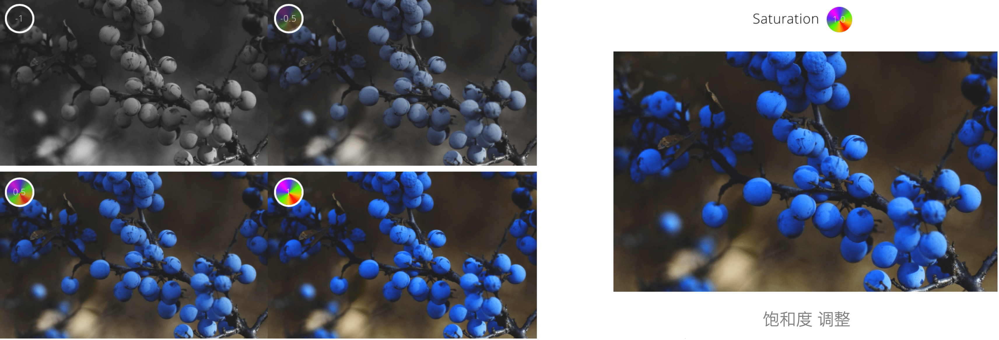

2.3 饱和度 Saturation
可以让你的照片更加鲜艳
当你增加图片的饱和度的时候，画面会变得更加鲜艳，适合于去表现风景，当然，饱和度过高会让画面显得非常不自然，所以有时候你需要选择自然饱和度而不是饱和度（下一章）。当你降低饱和度的时候，画面会变得偏灰，直至成为黑白，比较适合去表现淡雅的场景，例如日系摄影。
提高饱和度，可以让画面的色彩更加鲜艳。
其变化程度相对于自然饱和度更加强烈，但如果使用的数值过大,可能会让画面的色彩 过于饱和,出现色彩溢出、色块等不正常现象。
把饱和度降到 最低，可以让画面变成黑白。
